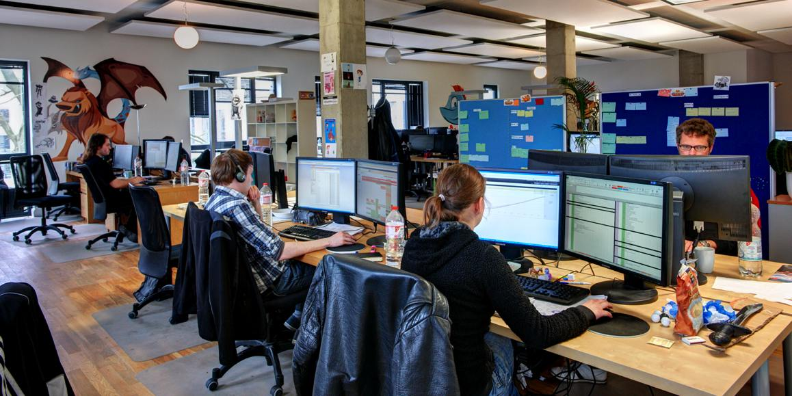

Development
Video game development and authorship, much like any other form of entertainment, is frequently a cross-disciplinary field. Video game developers, as employees within this industry are commonly referred, primarily include programmers and graphic designers. Over the years this has expanded to include almost every type of skill that one might see prevalent in the creation of any movie or television program, including sound designers, musicians, and other technicians; as well as skills that are specific to video games, such as the game designer. All of these are managed by producers.
In the early days of the industry, it was more common for a single person to manage all of the roles needed to create a video game. As platforms have become more complex and powerful in the type of material they can present, larger teams have been needed to generate all of the art, programming, cinematography, and more. This is not to say that the age of the "one-man shop" is gone, as this is still sometimes found in the casual gaming and handheld markets, where smaller games are prevalent due to technical limitations such as limited RAM or lack of dedicated 3D graphics rendering capabilities on the target platform (e.g., some PDAs).[citation needed]
With the growth of the size of development teams in the industry, the problem of cost has increased. Development studios need to be able to pay their staff a competitive wage in order to attract and retain the best talent, while publishers are constantly looking to keep costs down in order to maintain profitability on their investment. Typically, a video game console development team can range in sizes of anywhere from 5 to 50 people, with some teams exceeding 100. In May 2009, one game project was reported to have a development staff of 450. The growth of team size combined with greater pressure to get completed projects into the market to begin recouping production costs has led to a greater occurrence of missed deadlines, rushed games and the release of unfinished products.